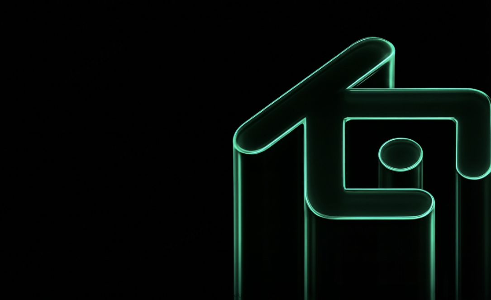
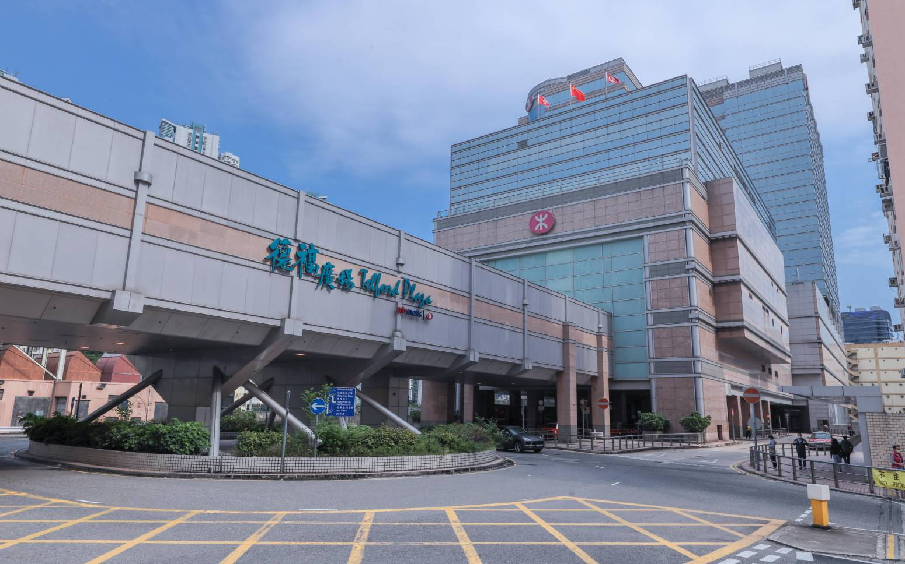
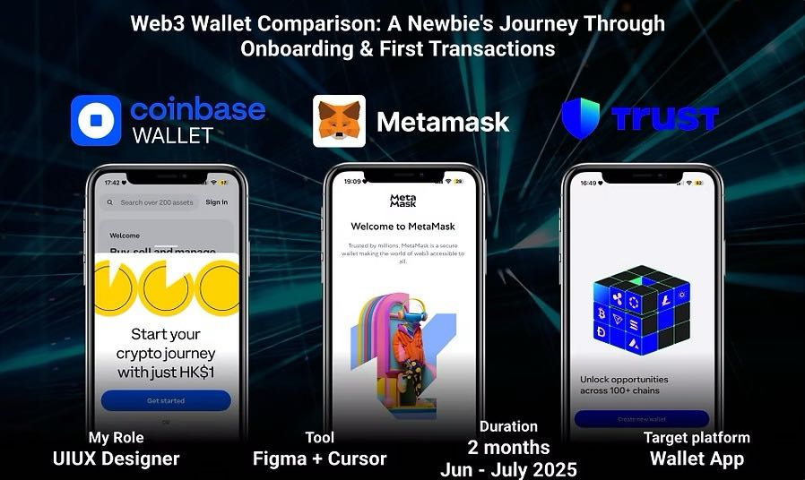
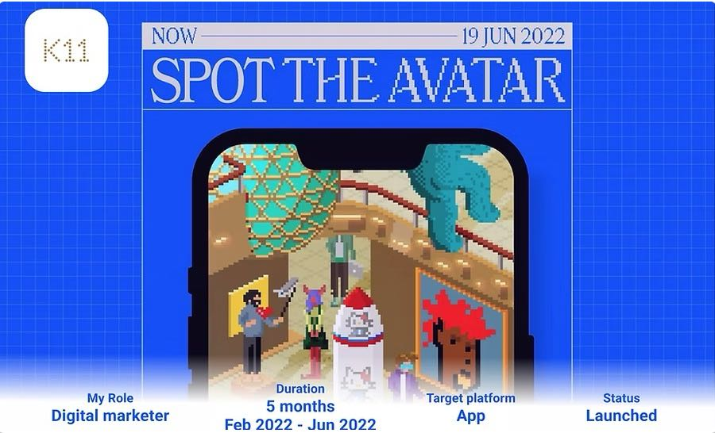
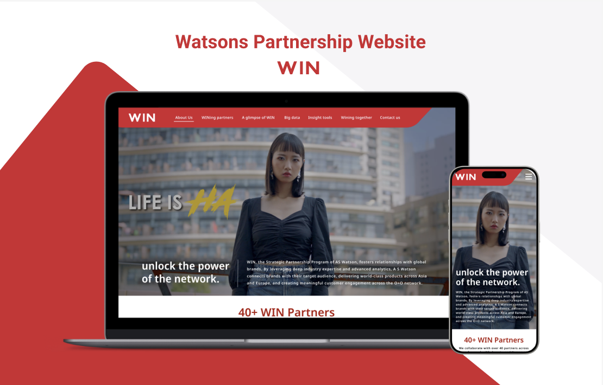
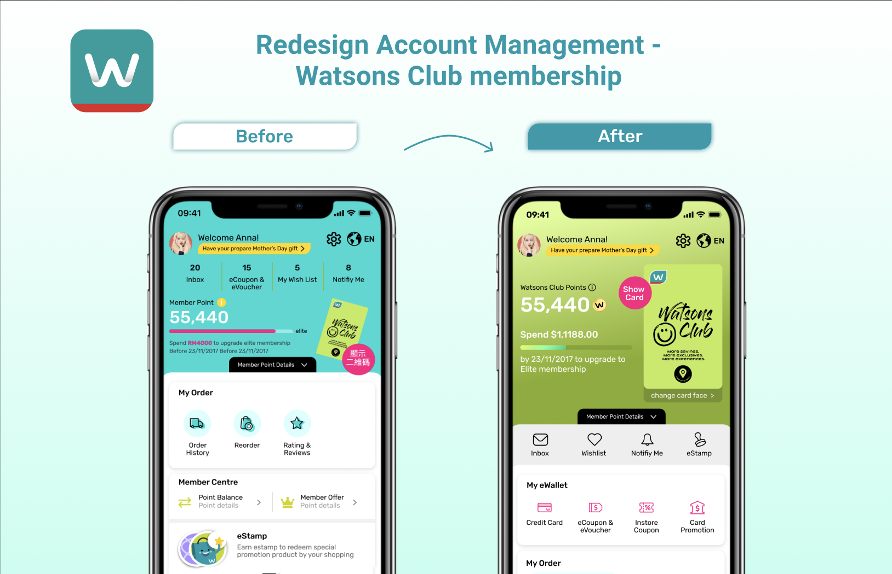
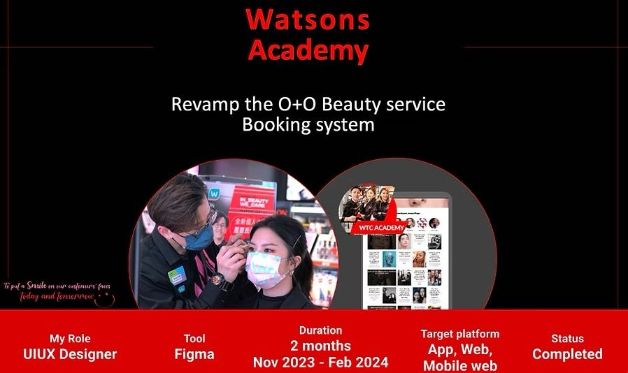

Hi There!👋🏻
This is Sharon
Designer with 4+ years creating digital experiences for 10M+ users at KuCoin, Watsons, K11, and MTR. My diverse background spanning AI-driven design and multimedia production showcases the values.
Graphic Design Works
From digital marketing campaigns to brand visual storytelling, explore my creative journey in graphic design that complements my UX expertise.

2025-26KuCoin Visual Flagship Projects
Led visual design for social platforms, Hong Kong Consensus 2026 booth, side events, partnership campagin and App Store creatives — unified Web3 brand across digital and offline.
 2022
2022
K11 App Graphics & Event Promotion
Collaborated with design team to create pop-up banners and live stories for K11 MUSEA app, promoting events and features.

2022-23MTR Social Media Graphics
Created 95% of engaging graphics and content for Telford Plaza and Maritime Square social media accounts.
UIUX Projects

2025Web3 Wallet Comparison
Onboarding & first transactions for newcomers. Heuristics and redesign proposals.

2022K11 Interactive Gamification
Spot the Avatar - Designing engaging user journeys that bridge digital discovery with physical retail experiences.
 2025
2025
Watsons AI Chatbot
Enhancing customer experience through intelligent order management with 24/7 AI-powered support and seamless live agent handoff.
 2024
2024
Watson Health Profile - UX Study
Designing a comprehensive health data integration platform that connects health devices and apps to create personalized wellness experiences within Watsons App.

2024Watsons Partnership Website - WIN
Comprehensive design system for Watsons' WIN Partnership platform, featuring modern e-commerce patterns, brand consistency, and user experience excellence.

2024Watsons My Account Page Redesign
Redesigning the account management interface to improve user experience and streamline membership features.

2023-24Watsons Academy O+O Beauty Booking Revamp
From chat‑based inquiries to a self‑serve, cross‑channel booking experience with live availability, soft‑lock confidence, and in‑store QR check‑in. Achieved 38% faster booking time and 18% higher conversion.
About ME
- Self-taught innovator: Transitioned from social science to design to Web3, bringing user psychology insights to solve complex blockchain UX challenges with human-centered solutions.
- AI-accelerated design: Leverage cutting-edge AI tools like Claude 4, Cursor and Grok for rapid crypto UX prototyping, pioneering accessible wallet interfaces and DeFi experiences.
- Multidisciplinary edge: Real crypto experience + traditional UX expertise + 300+ digital campaigns = designs that build trust in decentralized systems while driving adoption.
MY CRYPTO JOURNEY
Diving into NFTs at K11
My crypto adventure began at K11 as a Digital Marketing Officer, where I collaborated on an in-app gamification feature introducing users to NFTs. Crafting this engaging digital experience sparked my curiosity. I jumped into the NFT space, using MetaMask to buy Sandbox Land and collectibles. I even designed my own voxel-based NFTs with The Sandbox's tools, creating, owning, and selling assets—gaining real-world marketplace insights.
Mastering Blockchain Transactions
Eager to deepen my knowledge, I explored blockchain hands-on. I bought crypto with fiat (HKD) via P2P, transferred assets between exchanges and wallets, and navigated Web3 ecosystems like Uniswap and OpenSea. These experiences sharpened my understanding of decentralized finance (DeFi) and blockchain platforms, laying a foundation for user-focused design.
Blending AI and CeFi Exploration
My journey evolved with AI tools such as GPT‑4, DeepSeek, and Grok for design workflows and photo generation; explored AI agents like Manus and Cursor to enhance design processes. In 2025, I dove into centralized finance (CeFi), experimenting with staking, bridging, and swaps on platforms like OSL. This revealed critical UX patterns and security considerations in CeFi systems.
Leading Visual Design at KuCoin
Joined KuCoin exchange as Senior Visual Design Officer. Led consistent application of brand identity across digital, marketing, and offline channels. Collaborated with marketing, product, branding, and engineering teams to align visuals with business goals and deliver launches on time. Directed flagship projects: Hong Kong Consensus 2026 booth design, KuCoin × Tomorrowland partnership, Social meme posts and ASO app store creatives.
Ready to create exceptional digital experiences together? Let's connect!